Vom 23.8. bis 25.8. bin ich mit dem Zug nach Dänemark gefahren. Es war nicht ganz geplant, wohin, aber hat sich so ergeben. Mitgenommen habe ich mein MSR Elixir 2 Zelt, Isomatte, Schlafsack, Gaskocher, Campingkochsachen und ein paar Klamotten.
#Tag 1 Die Anreise nach Dänemark habe ich komplett mit dem Deutschlandticket gemacht. Von Hildesheim aus bin ich zuerst mit dem RE10 nach Hannover gefahren und von dort mit dem Metronom nach Hamburg. In Hamburg bin ich dann in einen weiteren Regionalzug nach Flensburg gefahren.
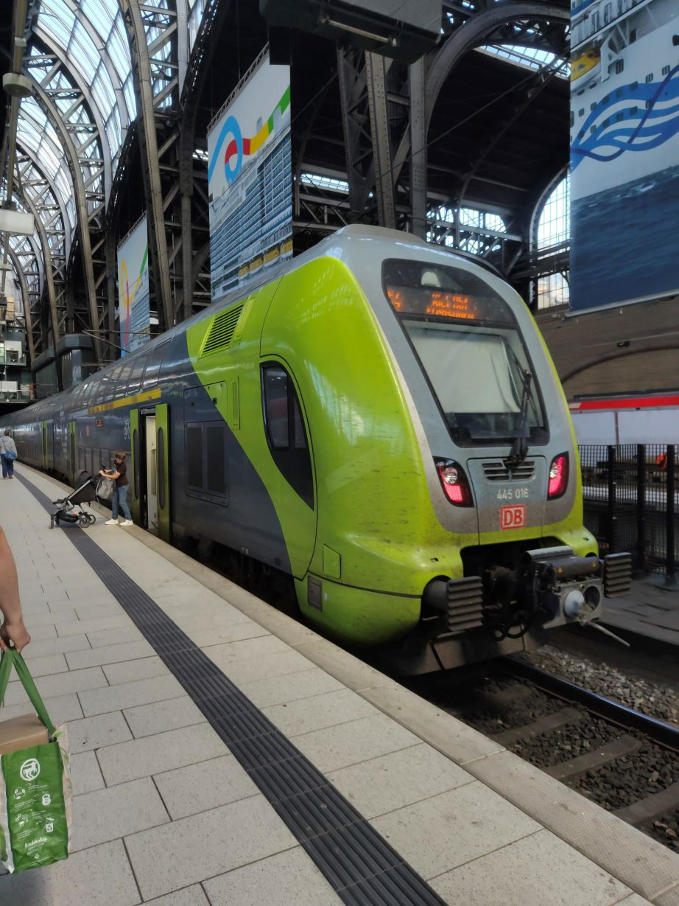 Zug von Hamburg nach Flensburg
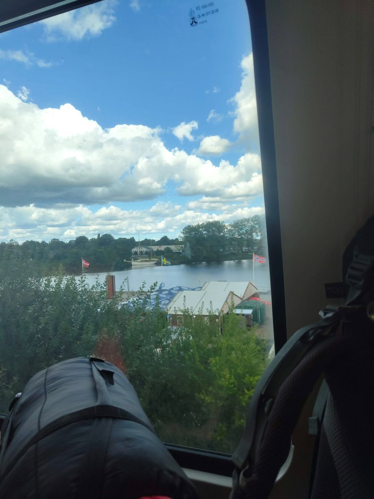 Aussicht aus dem Zugfenster
Zuerst war meine Idee, in Flensburg auf einem bewirtschafteten Campingplatz zu zelten, aber dann habe ich gedacht, dass ich, wenn mein Zelt erstmal steht, bestimmt nicht weiter fahren würde und deswegen lieber direkt nach Dänemark fahren sollte. Da ich noch etwas Zeit hatte, bis der nächste Zug nach Dänemark fuhr, bin ich zu einem Rewe gegangen und habe mir Brötchen, eine Gurke und etwas zu trinken gekauft. Die Kassiererin hat mich gefragt, wohin ich fahre und meinte, in ihrem Alter hätte sie darauf keine Lust mehr, aber als sie in meinem Alter war, hatte sie auch Spaß am Campen. Sie war außerdem erstaunt, dass ich alleine unterwegs war. Mit dem schweren Rucksack war die Strecke zu Fuß schon ein wenig anstrengend. Ich schätze, dass er etwa 13 Kilo gewogen hat, was mich zum Nachdenken gebracht hat, wie andere Leute lange Wanderungen wie Norge på langs mit einem über 30 Kilo schweren Rucksack schaffen. Am Bahnhof in Flensburg war übrigens mehrere Toiletten defekt und bei dem einzigen funktionierenden Klo war die Tür defekt (man konnte sie nicht abschließen).
Das Ticket für den Zug nach Padborg, eine Stadt, die nur eine Station nach Flensburg direkt hinter der Grenze liegt, habe ich in der DB-App für 9,90€ gekauft. Das war also meine einzige Ausgabe für die Anreise. Wahrscheinlich wäre es billiger (30kr) gewesen, wenn ich es in der DSB-App (dänische Bahn-App) gekauft hätte, aber in dem Moment hatte ich keine Ahnung davon.
Der Zug war pünktlich und die Tickets aller Fahrgäste wurden kontrolliert. Der Zug war nicht elektrifiziert und auch nicht so schnell wie deutsche Züge. Es war etwas ungewohnt, in einem so laut brummenden Zug zu fahren, aber der Sitz war sehr bequem, wodurch ich fast ein bisschen traurig war, dass ich nicht länger in diesem Zug bleiben konnte. Kurz bevor ich aussteigen musste, wurde durchgesagt, dass nun eine Polizeikontrolle folgen werde, aber ich wurde nicht kontrolliert. Allerdings standen vor dem Bahnhof in Padborg ein deutsches und ein dänisches Polizeiauto, was mir schon ein etwas komisches Gefühl gegeben hat und ich frage mich, ob ich wohl ohne Kontrolle davongekommen wäre, wenn ich nicht weiß wäre. 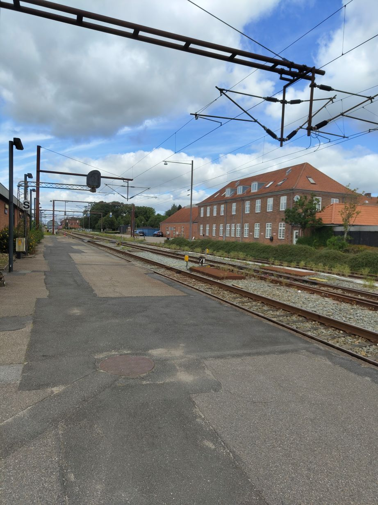 Der Bahnhof in Padborg
In Padborg war das Wetter schön und sonnig. Ich musste erst ein paar Kilometer vom Bahnhof bis zu dem Trekkingplatz wandern (ganz schön anstrengend mit dem Gepäck). Die Wanderung sollte eigentlich eine Stunde dauern und ca 5 Kilometer lang sein, aber dann habe ich gemerkt, dass ich aus Versehen in die falsche Richtung gelaufen war und musste nochmal zurück und am Ende hat es etwas über 1,5 Stunden gedauert, vom Bahnhof bis zum Zeltplatz zu kommen. Glücklicherweise hatte ich auf meinem Fehlgang aber immerhin einen Geocache gefunden. Der war süß, mit einem Weihnachtsmann drin. 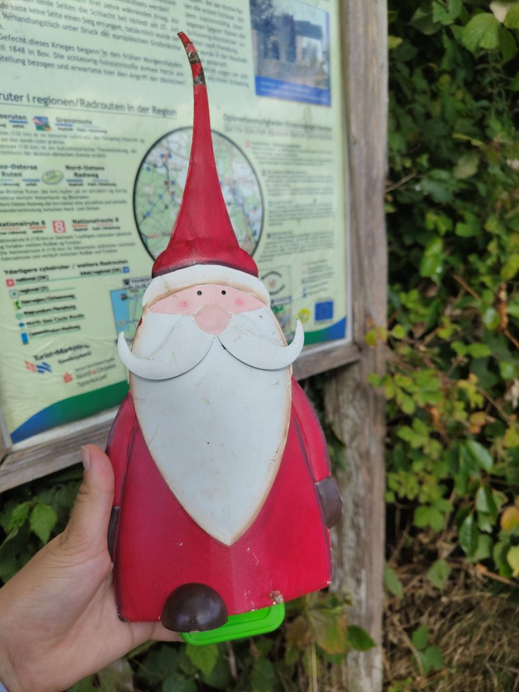 Ein Geocache mit einem niedlichen Weihnachtsmann
Die Wanderung in die richtige Richtung war zu Beginn leider nicht so schön. Nachdem man den Bahnhof und die Ortsmitte verlassen hatte, musste man an einer vielbefahrenen Straße entlang durch ein Industriegebiet gehen. Der von Google Maps vorgeschlagene Gehweg war eigentlich nur ein Radweg und ich war mir nicht sicher, ob man dort überhaupt zu Fuß gehen darf, aber ich habe keinen besseren Weg gefunden. Außerdem waren in dem Gebiet viele LKW-Parkplätze und es sah immer so aus, als bestünde die Gefahr, dass der Geh-/Radweg bald auch noch endet :( Irgendwann habe ich dann eine Autobahnbrücke überquert und endlich den Wald erreicht. 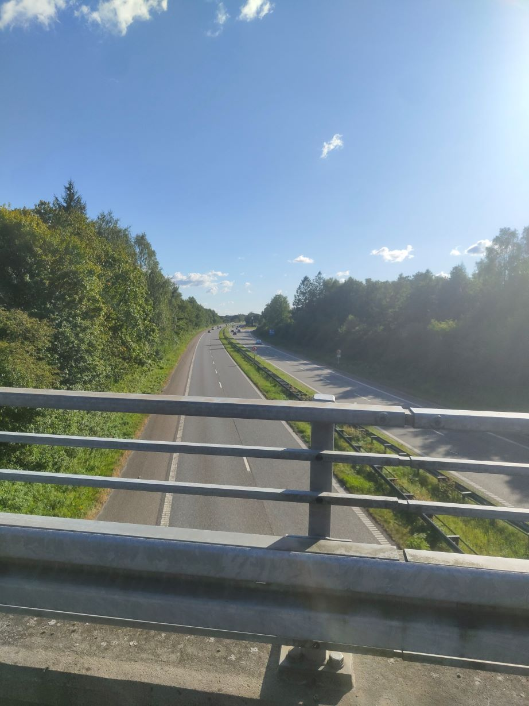 Überqueren der Autobahnbrücke - fast da am Wald
Von dort aus war es dann nur noch ein kleines Stück durch Gras- und Heidelandschaft, bis ich den Zeltplatz gefunden habe. Auf dem Weg kam ich bereits an dem Frøslev-Lager vorbei, über das ich später noch genauer berichten werde. Der Zeltplatz war kein richtiger bewirtschafteter Campingplatz, sondern einer der vielen einfachen dänischen Trekkingplätze, die man gratis nutzen darf. Auf diesem Platz gab es einen Wasserhahn und ein einfaches Klo im Wald. 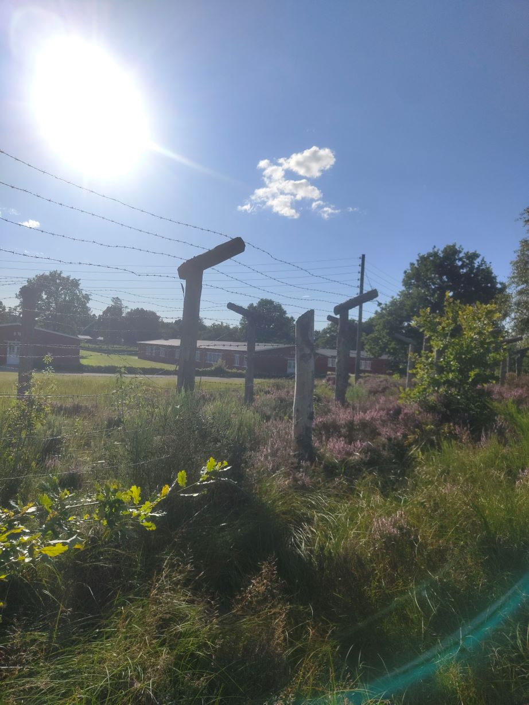 Der Blick auf das alte Lager von außen
Als ich ankam, habe ich gesehen, dass schon zwei Zelte auf der Wiese standen. Trotzdem habe ich mein Zelt aufgebaut und mir Nudeln mit Pesto zu Essen gekocht. Als ich abends nach dem Essen vor meinem Zelt saß, hat mich eine Frau aus dem anderen Zelt angesprochen. Sie und ihr Mann waren aus den Niederlanden und hatten schon eine Nacht zuvor auf diesem Platz übernachtet. Sie haben ein Lagerfeuer gemacht und mich eingeladen, mich dazu zu setzen. Kurze Zeit später kam auch ein Deutscher dazu, der ungefähr in meinem Alter war und in dem anderen Zelt geschlafen hatte. Wir haben uns den ganzen Abend sehr nett unterhalten und die niederländische Frau hat uns Kekse abgegeben. Es stellte sich heraus, dass sowohl die Holländer als auch der Deutsche auf dem nahe gelegenen Parkplatz geparkt hatten und ich die einzige nicht motorisierte Camperin war. Daher hatten die beiden anderen auch sehr viel mehr Auswahl, was das Essen anging und überhaupt auch mehr Ausrüstung mit. 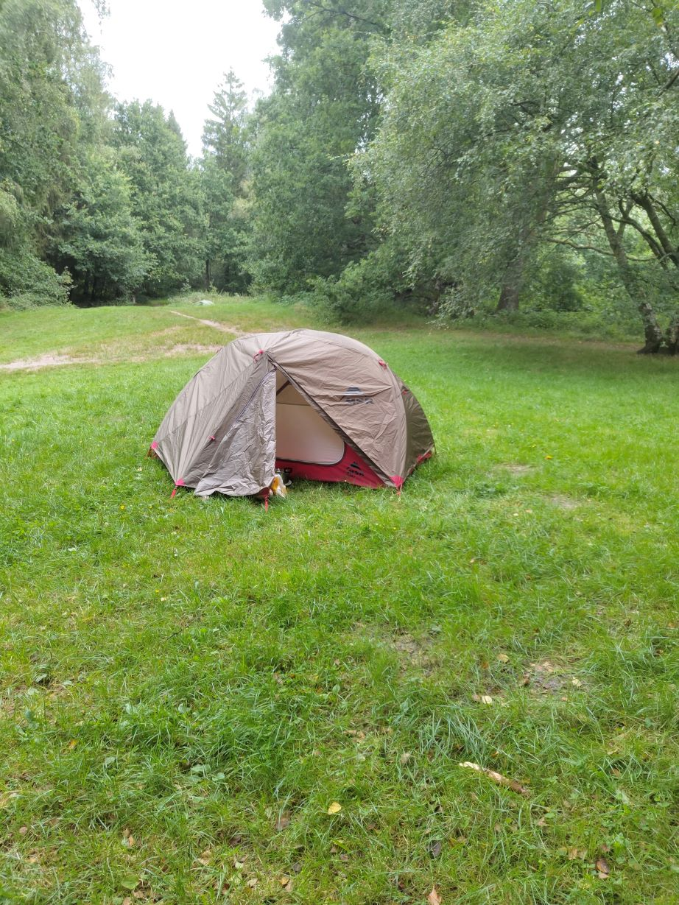 Mein Zelt auf der Wiese 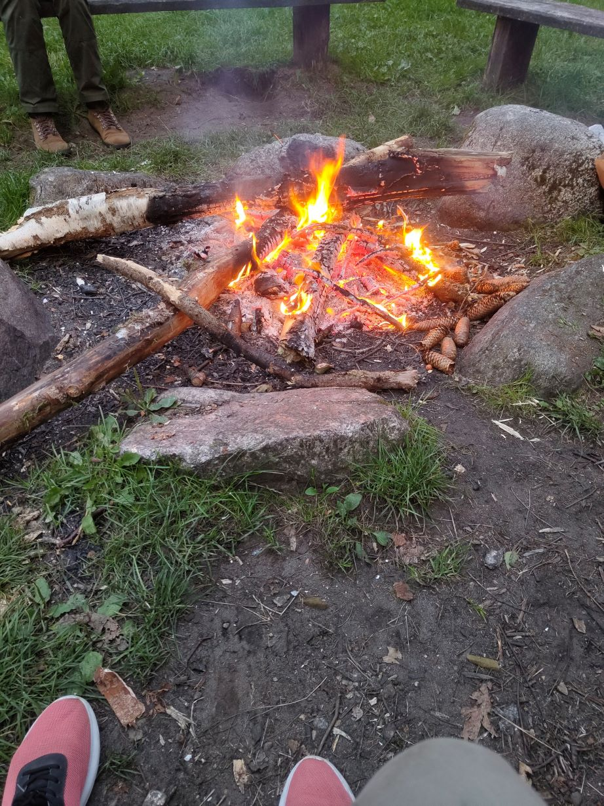 Unser Lagerfeuer 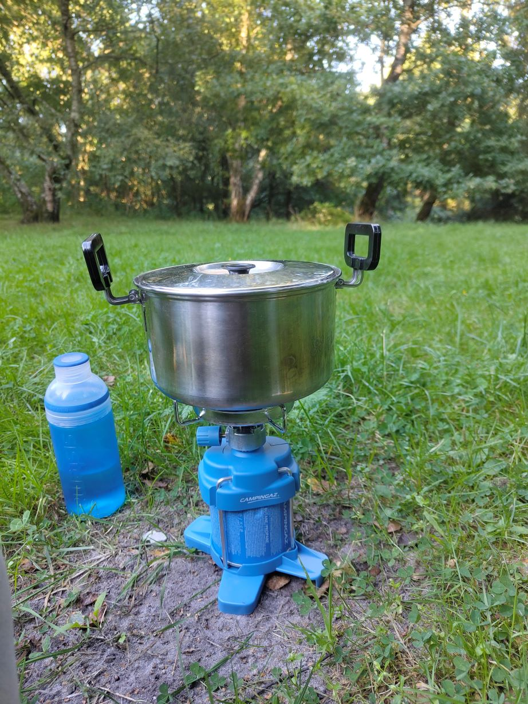 Mein Campingkocher :)
Nachts war es leider ziemlich kalt und mein Schlafsack war nicht wirklich warm genug. Dennoch konnte ich ein paar Stunden schlafen, aber wirklich erholt war ich nicht.
#Tag 2 Am nächsten Tag habe ich zuerst gefrühstückt und mich dabei wieder mit meinen Mitcampern unterhalten. Der Deutsche hat mir angeboten, mir für die nächste Nacht seine Wolldecke auszuleihen, da er sowieso allergisch dagegen sei, was ich sehr gerne angenommen habe. Nach dem Frühstück bin ich losgegangen und habe eine Geocaching-Tour gemacht. Da der Trekkingplatz in einem Hundewald lag, gab es viele schöne Wege zum Wandern und man hat eine Menge Leute mit Hunden getroffen. 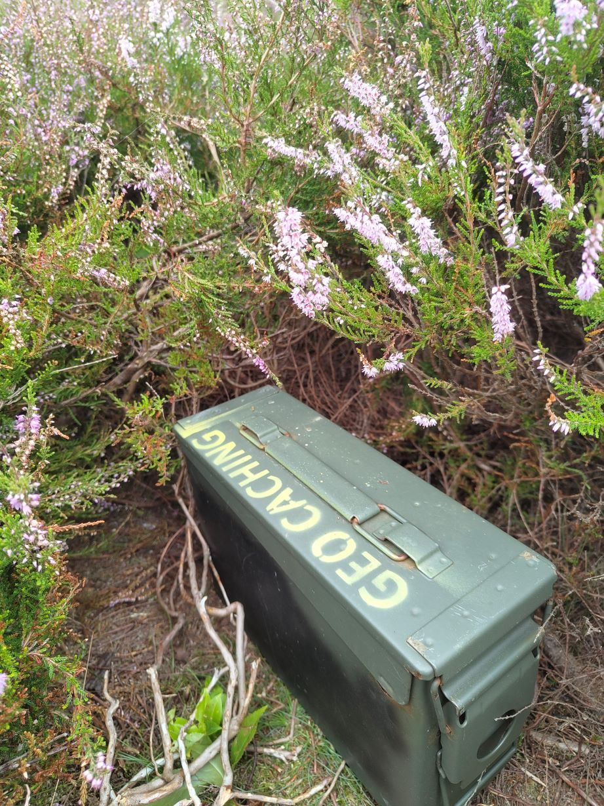 Ein Geocache in Padborg 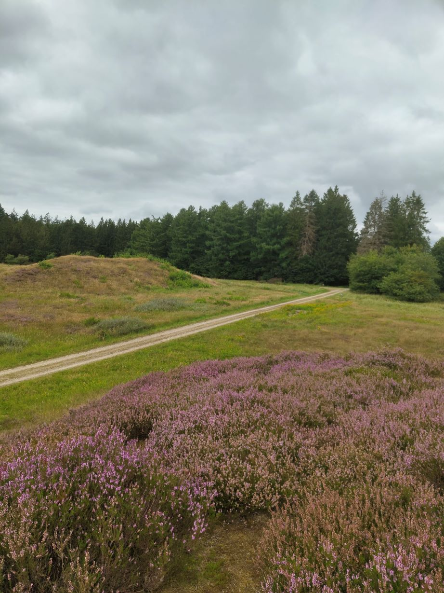 Die Heidelandschaft im Frøslev-Wald
Danach habe ich das Frøslev-Lager mit Museum besucht. Es war ein ehemaliges Gefangenenlager, das während der NS-deutschen Besatzung in Dänemark errichtet wurde, um dort vor allem dänische politische Gefangene zu inhaftieren. Dort habe ich auch die Geschichte von Ib und Preben Holm Hansen und ihrem Vater Thorvald gelesen, die als Mitglieder in einer kommunistischen Widerstandsgruppe gegen die NS-deutsche Besatzung erst in Frøslev inhaftiert wurden (wo die Bedingungen aufgrund der dänischen Selbstverwaltung noch etwas besser als in den deutschen Lagern waren) und dann in KZs in Deutschland deportiert wurden. Nur Preben hat bis zur Befreiung überlebt. Ib wurde nur 17 Jahre alt und hatte unter anderem Zwangsarbeit in der Varta-Batteriefabrik in Hannover-Stöcken leisten müssen. Diese Geschichte und andere, die in dem Museum gezeigt wurden, haben mich sehr berührt. Man kann im Frøslev-Lager heute noch die Baracken und wieder aufgebaute Wachtürme sehen. Ich finde es wichtig, dass es solche Orte noch gibt, damit wir die Geschichte nicht vergessen. Ich habe ein kurzes Gespräch mit der Museumsmitarbeiterin geführt und sie war erfreut, dass ich Norwegisch sprechen und Dänisch lesen kann. Auf dem Gelände gab es außerdem eine weitere Ausstellung über dänische UN-Missionen, die ich mir ebenfalls angeschaut habe. 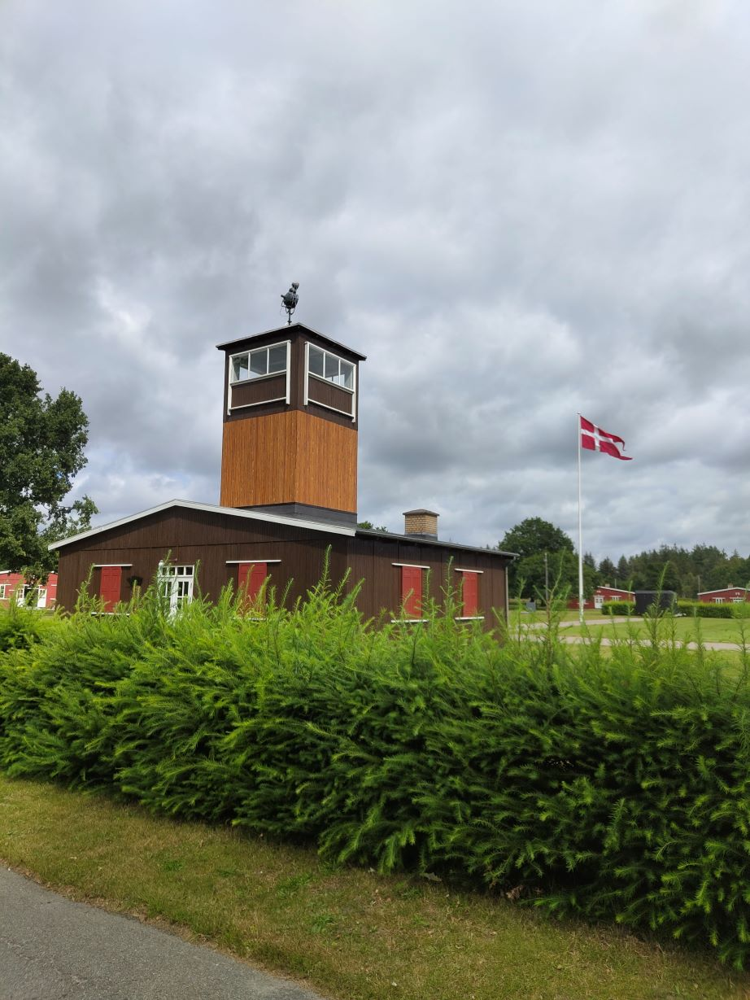 Der Wachturm des Lagers 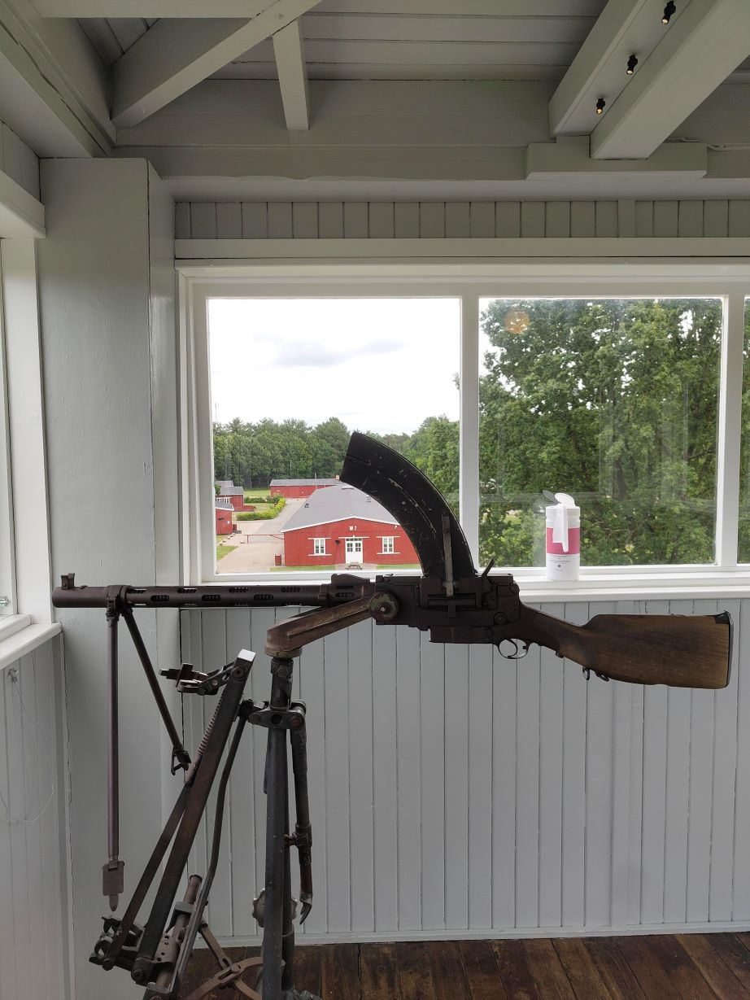 Man konnte den Wachturm besichtigen. 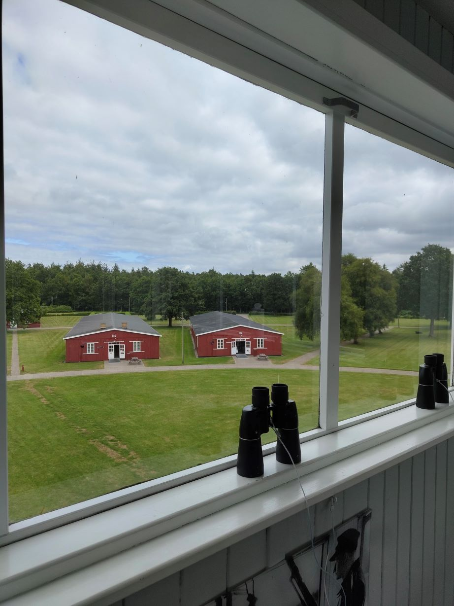 Die Aussicht aus dem Wachturm
Am Nachmittag sind die Holländer abgereist, während der Deutsche noch da war. Wir haben zusammen den ganzen Abend sehr engagiert und leider auch sehr erfolglos versucht, ein Feuer mit einem Feuerstahl zu entzünden, bis er dann doch sein Feuerzeug rausgeholt und am Ende sogar mit dem Gasbrenner das Feuer angezündet hat. Danach hatten wir ein langes und interessantes Gespräch über Politik und unsere Job-Aussichten und darüber, dass Social Media eigentlich echt keine gute Idee ist. Außerdem hat er mir noch Tee gekocht und einiges über Tee erzählt. 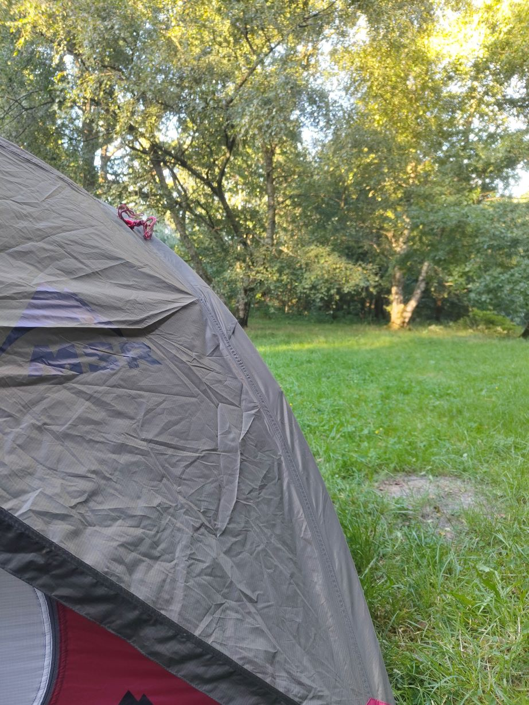 Mein Zelt und die Landschaft dahinter
#Tag 3 Am dritten Morgen war ich ziemlich müde und erschöpft. Auch wenn ich mit der Decke nicht mehr gefroren habe, hatte ich trotzdem erstmal genug erlebt. Daher habe ich beschlossen, trotz meiner urprünglichen Planung einer eventuell längeren Tour mit Stopps auf verschiedenen Trekkingplätzen, wieder nach Hause zu fahren. Nach dem Abbau meines Zeltes bin ich wieder zum Bahnhof gewandert und mit verschiedenen Zügen nach Hause gefahren. Beim Aussteigen in Flensburg mussten alle Fahrgäste der Polizei ihren Personalausweis zeigen. Es ist schon komisch, innerhalb Europas so stark zu merken, dass da eine Grenze verläuft. Ich dachte, wir wären über diese Zeiten schon hinaus. 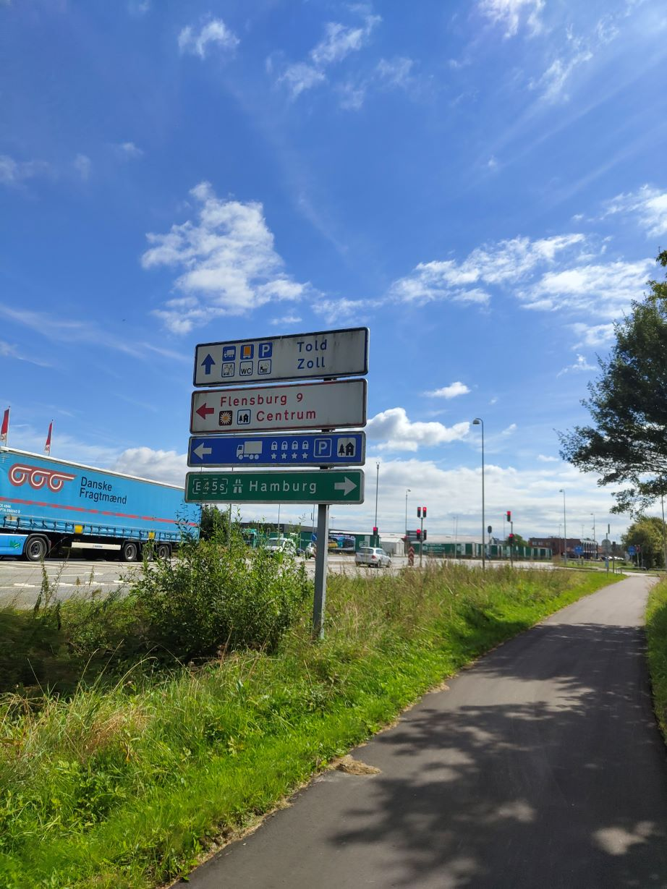
Von Hamburg nach Hannover habe ich mir den ICE gegönnt, der Last Minute nur ca 30€ gekostet hat. Zum Schluss habe ich in Hannover mein erstes Essen seit 3 Tagen gekauft, das nicht Nudeln mit Pesto oder Brötchen mit Erdnussbutter war, nämlich Pommes mit veganer Currywurst, was wirklich sehr lecker war. 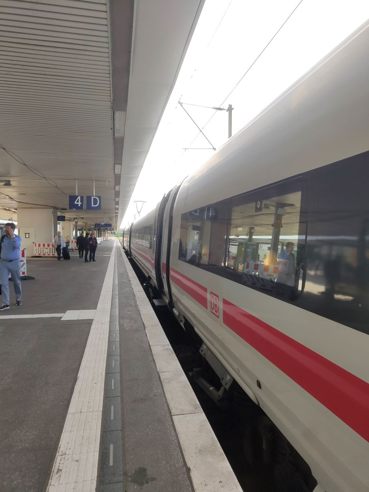 Mein ICE 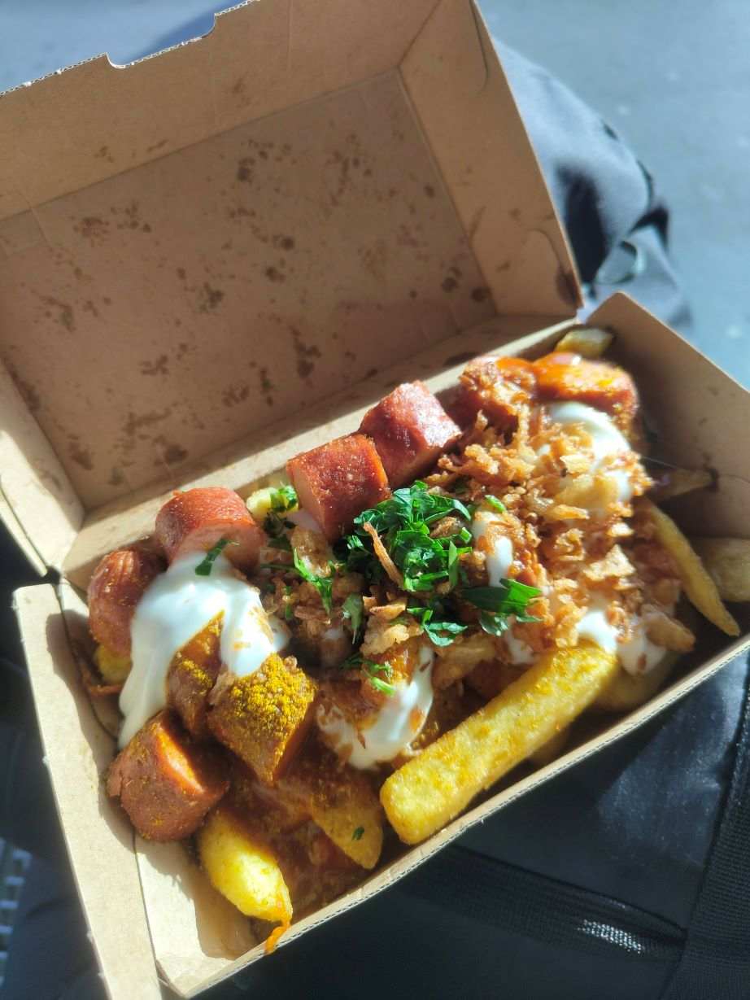 Mein Essen am Hannover Hauptbahnhof